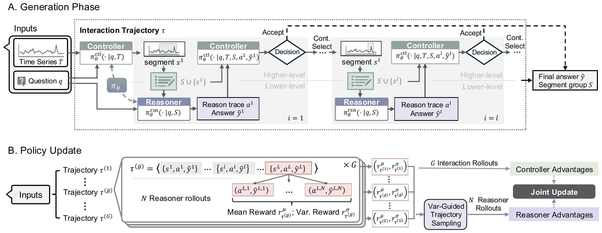

Time-series reasoning tasks start with a natural-language question and require targeted analysis of a time series. Evidence may span the full series or appear in only a few short intervals, so the model must decide what to inspect. Most existing approaches encode the entire series into a fixed representation before inference, regardless of relevance.
ARTIST formulates time-series reasoning as a sequential decision problem. It interleaves reasoning with adaptive temporal segment selection using a controller–reasoner architecture and trains both roles with reinforcement learning:
Rather than relying on a static summary of the full sequence, ARTIST actively acquires task-relevant information at inference time. A hierarchical, collaborative self-play post-training method lets a single policy excel at both segment selection and question answering — improving average accuracy by 6.46 points over the strongest baseline across six benchmarks while typically using only 30–70% of the input series per query.

ARTIST is a single policy LLM that operates in different roles for time series reasoning: a controller that selects the next segment and decides when to stop, and a reasoner that produces segment-conditioned reasoning and the final answer. Training proceeds in two stages:
Across six time-series reasoning benchmarks spanning clinical, financial, environmental, and general domains, ARTIST outperforms strong text LLMs, time-series reasoning models, and vision-language models. Accuracy and F1 (%) against general LLMs and time-series reasoning baselines:
| Model | ETI | RCW | ECG-QA | Sleep-QA | TSQA | TRQA | Avg. | |||||||
|---|---|---|---|---|---|---|---|---|---|---|---|---|---|---|
| Acc | F1 | Acc | F1 | Acc | F1 | Acc | F1 | Acc | F1 | Acc | F1 | Acc | F1 | |
| Random Guess | 25.00 | 25.00 | 50.00 | 50.00 | 50.00 | 50.00 | 16.67 | 16.67 | 29.67 | 29.67 | 37.13 | 37.13 | 34.74 | 34.74 |
| General-purpose LLMs | ||||||||||||||
| GPT-5 | ||||||||||||||
| w/o statistics | 29.50 | 27.90 | 34.07 | 34.88 | 51.98 | 51.78 | 0.49 | 1.77 | 30.92 | 27.22 | 21.50 | 21.67 | 28.08 | 27.54 |
| w/ statistics | 63.54 | 63.72 | 32.74 | 31.08 | 53.96 | 49.62 | 0.49 | 1.49 | 35.75 | 32.24 | 25.00 | 28.70 | 35.25 | 34.48 |
| Llama-3 8B | ||||||||||||||
| w/o statistics | 25.50 | 25.96 | 43.97 | 40.41 | 50.00 | 48.45 | 31.99 | 14.09 | 48.97 | 46.75 | 57.69 | 53.88 | 43.02 | 38.26 |
| w/ statistics | 35.50 | 34.39 | 62.83 | 45.82 | 50.00 | 48.90 | 22.06 | 13.34 | 44.93 | 44.12 | 55.50 | 53.02 | 45.14 | 39.93 |
| Qwen3-8B | ||||||||||||||
| w/o statistics | 25.25 | 24.61 | 0.00 | 0.00 | 50.62 | 48.46 | 4.90 | 6.71 | 11.35 | 11.02 | 14.63 | 15.20 | 17.88 | 17.87 |
| w/ statistics | 45.00 | 40.88 | 0.00 | 0.00 | 51.86 | 49.06 | 1.96 | 3.87 | 13.53 | 12.78 | 15.25 | 14.02 | 21.35 | 20.31 |
| Qwen3-14B | ||||||||||||||
| w/o statistics | 32.00 | 30.66 | 33.19 | 27.40 | 50.99 | 50.42 | 3.43 | 5.73 | 24.15 | 22.50 | 33.00 | 29.54 | 29.46 | 27.08 |
| w/ statistics | 42.00 | 47.34 | 22.57 | 22.91 | 54.58 | 51.79 | 3.43 | 4.48 | 24.15 | 22.20 | 29.00 | 30.32 | 29.29 | 29.84 |
| Time-series reasoning models | ||||||||||||||
| ChatTS-14B | ||||||||||||||
| Base Model | 31.00 | 21.87 | 69.91 | 30.24 | 48.02 | 32.07 | 17.65 | 13.19 | 43.48 | 30.72 | 57.50 | 42.12 | 44.59 | 28.37 |
| + SFT | 50.50 | 40.69 | 73.89 | 33.10 | 53.47 | 24.31 | 26.47 | 14.60 | 46.38 | 42.65 | 69.00 | 55.57 | 53.28 | 35.15 |
| OpenTSLM-4B | ||||||||||||||
| + SFT | 82.69 | 82.66 | 65.49 | 38.29 | 69.50 | 41.00 | 35.37 | 18.99 | 47.50 | 35.81 | 76.25 | 69.36 | 62.80 | 47.68 |
| ITFormer-4B | ||||||||||||||
| + SFT | 84.62 | 84.60 | 67.31 | 57.95 | 57.31 | 49.91 | 33.62 | 15.77 | 49.50 | 23.62 | 80.12 | 74.22 | 62.08 | 51.01 |
| ARTIST (ours) | ||||||||||||||
| + SFT | 85.12 | 85.11 | 69.75 | 61.46 | 56.31 | 55.68 | 28.13 | 17.94 | 60.06 | 57.13 | 82.26 | 62.32 | 63.61 | 56.61 |
| + SFT + RL | 87.03 | 87.10 | 77.00 | 50.00 | 69.81 | 52.67 | 36.63 | 19.21 | 62.00 | 58.66 | 83.06 | 78.02 | 69.26 | 57.61 |
| Improvement | +2.41 | +2.50 | +3.11 | +3.51 | +3.14 | +3.89 | +1.26 | +0.22 | +12.50 | +11.91 | +2.94 | +3.80 | +6.46 | +6.60 |
ARTIST (SFT + RL) highlighted; Improvement is the gain over the strongest baseline per dataset and metric. The largest gains appear on rare-event localization and multi-segment reasoning (up to +12.5 points). Qwen3-8B failed to produce the required answer template on RCW (reported as 0.00). See the paper for vision-language comparisons, ablations, long-sequence scalability, and inference-cost analyses.
Copy@inproceedings{messica2026artist,
title = {Adaptive Time Series Reasoning via Segment Selection},
author = {Messica, Shvat and Zhang, Jiawen and Li, Kevin and
Tsiligkaridis, Theodoros and Zitnik, Marinka},
booktitle = {Proceedings of the 43rd International Conference on Machine Learning (ICML)},
year = {2026}
}